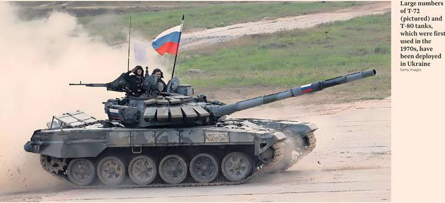

Frustration with Putin as Trump shortens window for avoiding sanctions
Steff Chavez — New York, Christopher Miller — Kyiv, Courtney Weaver — Berlin
Donald Trump has given Russia a shorter window of 10 to 12 days to agree a ceasefire in Ukraine or face tighter sanctions, as his frustration with his Russian counterpart escalates.
Speaking at his Turnberry golf resort in Scotland yesterday, the US president said he would bring forward the 50-day deadline he previously set Vladimir Putin to avoid so-called secondary sanctions. “I’m going to reduce that 50 days that I gave him to a lesser number,” said Trump. “I’m going to make a new deadline of about 10 or 12 days from today.
“There’s no reason in waiting,” he added in a joint appearance with UK Prime Minister Sir Keir Starmer. “I want to be generous, but we just don't see any progress being made.”
Trump on July 14 threatened Moscow with “severe” tariffs and secondary sanctions against countries that buy Russian oil, if Putin does not reach a truce with Ukraine.
The US president signalled yesterday he does not believe Putin will comply within the original 50-day window. “I think I already know the answer, what is going to happen,” he said.
Trump added that he would confirm the new deadline last night or today, describing himself as “very disappointed” with the Russian president. “I’m not so interested in talking [to Putin] any more,” he said. “He talks. We have such nice conversations... and then people die the following night in a missile” strike. “Every time I think it’s going to end, he kills people.”
While Trump spent the early months of his presidency blaming the conflict on Ukrainian President Volodymyr Zelenskyy, his tone has shifted recently, particularly since the US and Ukrainian presidents met during the Nato summit just over a month ago.
The Kremlin did not have an immediate response to Trump’s new ultimatum, but before his comments on the shorter ceasefire deadline, Russian officials were continuing to insist Moscow was open to talks. “We are open to dialogue. President Putin has repeatedly spoken about this, with any other country, including European ones,” foreign minister Sergei Lavrov said yesterday.
Dmitry Peskov, Putin’s spokesperson, said a Trump-Putin meeting was possible during the Russian president's visit to China in September, but so far no specific preparations were under way.
Yesterday, the Ukrainian president’s chief of staff, Andriy Yermak, welcomed Trump’s decision to bring forward the ceasefire deadline, thanking him for “standing firm and delivering a clear message of peace through strength.”
Russia in recent months has increasingly used “swarm” tactics in its drone attacks against Ukraine, cutting through Kyiv’s air defences at the highest rate since Putin’s full-scale invasion began in February 2022.
Trump's shift in position also comes as Russian forces intensify their ground offensive across the 1,200km front line in eastern Ukraine, advancing at the fastest rate in a year.
Zelenskyy, who spoke with Trump on July 4 and welcomed his special envoy, Keith Kellogg, to Kyiv the following week, has urged Washington to step up economic sanctions on Russia to help suppress its war machine. Washington can cut individuals and countries off from the global economy via its far-reaching sanctions programme.
The White House has said that if Russia refuses to agree to a ceasefire, it “will face very steep tariffs,” and Washington would apply secondary sanctions to countries purchasing oil from Moscow. “That will do deep damage to Russia’s economy,” White House press secretary Karoline Leavitt said this month.
Additional reporting by Lauren Fedor